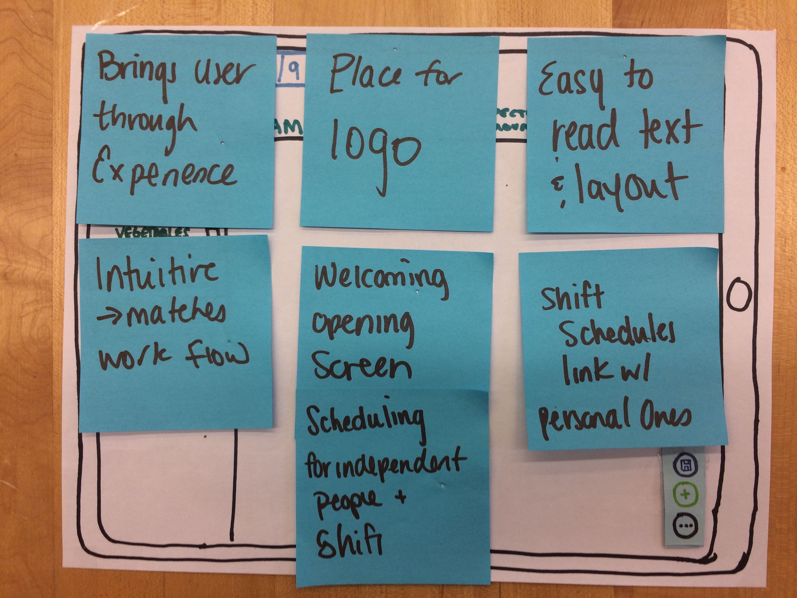

{kind=link}
{kind=link}
{kind=link}
Design Development
Key design aspects
We are creating a tablet app to assist in tracking the inventory for small-college dining hall staff.
Images and videos of our prototype are available at the bottom of the report.
While we were designing our prototype, we kept in mind a mobile design guide - particularly Google’s Material Design guide. Many features that we created will be implemented using features available in the Material Design framework.
The app’s main page opens to ingredient search, currently our only designed page. We believe that co-designing this portion is most critical, instead of trying to design extra features that may not be as useful to our users.
Ingredient Search:
Our ingredient search has 4 main components: A center screen with ingredients, a sidebar with access to useful functions, a search bar and multi-purpose button.
Our center screen is the heart of our app, displaying food ingredients as a card that can be expanded to display more information about that food. This allows the user to focus on each item and breaks up foods in a clean manner. Each card has meta-data that is always displayed: the food’s name, a blank entry box for entering the current amount of the food, a number the signifies the amount of food needed to be “fully stocked” and an output field estimating the amount needed to order. We deemed this information to be critical to making quick decisions and as such placed it at the top level. For the output field, estimation is done via simple subtraction from the current amount from the expected or required amount, a basic function of any inventory process. In addition to the persistent top level data, the cards contain a wealth of extra information, including purveyor name, nutrition info, dietary restriction info, units, notes, and the tags used to filter the food. Each card also gives the freedom to edit any of this information in order to allow an extra customization.
The sidebar acts as the main hub for filters, bulk expansion operations and our past order history. Of these, we believe the filters provide a large amount of help in sorting through the many ingredients a kitchen requires. Not only does it include default filters, it also supports the ability to add new filters based on any of the fields present. A chef who is required to make a gluten free option for every meal may find that a gluten free filter is a lifesaver. We envision this system as being like any other filter system, with the added idea of smart filters being auto-generated. Additionally, we support the ability to see past order history, replacing the ingredients on the screen with past orders. This was a pain point that many of our users identified and as such reuse of the ingredients list for order history provided a seamless way of integrating past orders into our existing framework. Finally, during co-design sessions, we found that users expanded multiple cards at the same time, especially when filtering. This prompted us to follow the lead of many other interfaces and allow for expanding or collapsing of all cards. While our design sessions only focused on expansion, collapsing provides a simple way for chefs to quickly zoom out to the top level without having to close each card manually.
The search bar is a common and well designed feature that we are using for searching of cards. In our case, advance search is also considered, allowing users to search by a variety of options, including Date for seeing past inventories, Amount for identifying large purchases. If our users find that their search queries are not covered by our options, there may be room to add additional search types, much like with filters.
Our menu button controls all of the input and output operations for our app, allowing for saving and exporting of data and addition of ingredients. For saving and exporting, our design brings up a save dialog, along with the phone-specific export file format choices. Currently, Jeff usually takes manual notes on pen and paper, and then brings it to the computer. To reduce the need to take the paper and manually input by hand, he can send the file to himself and other members of his staff, like manager Meagan. The real life chef was nervous about making an error when copying the inventory, a concern assuaged by our method. This reduces that error and makes it easy to share across multiple devices or people. The add ingredient button has two main purposes, to allow importing of food data or manual importing. Users are presented with these two options upon adding an ingredient. Manual entry requires a few top level fields, including, but not limited too, the food name, the nutrition information, the purveyor, expected full stock value and food category. For smaller caterers, being able to add new items to the digital interface is a must. Additionally, the ability to bulk import food data using .csv files allows chefs to quickly transition from their current excel based tracking to the app without labor intensive manual addition.
Why we made these decisions (Observations from user interviews)
Our chefs and managers needed an easy to use, easy to manage system. They were using paper and pen because it was comfortable- all it took as a jotted note, and they could bring it to a computer and upload it into an excel spreadsheet. With that in mind, all of the points of design were focused on making it easy to use for someone without much experience using tablets. The process has to be around the same complexity of manual input.
In terms of testing functionality, we started our interviews with fellow Olin students by asking them to imagine that they were running the Olin dining hall and taking inventory. We wanted to see if they could figure out how to use the prototype without any direction, by asking them to complete a task and observing how they completed it. The script that we more-or-less followed for these interview can be found here. The first few interviews did not go as smoothly as we planned, as we quickly discovered features that we needed to implement, additional dialogues that we needed to create endpoints for, and buttons that were unintuitive.
Comparison to Alternatives
Our alternatives focused on a variety of other designs, such as an excel style table or a google style search bar landing page. In addition to finding designs that best fit our app goal, we also spent time narrowing our goal down from a bevy of features, such as menu creation and reordering to focus on a pain point that was more well-implemented with relatively similar amounts of impact. We found that while a menu creator could have been used, the space was already saturated with options. Selecting inventory management, allowed us to widen our user base as this was seen universally as a pain point. From there, we ideated many alternatives that can be viewed in our appendix. Our initial alternatives had many of the features we narrowed down and as such our reasoning for designing our app as such was discussed above.
Shortcomings
There are a few features that we want to include which we were unable to fully design/test with users. This includes the order history feature, which we have a few concepts for but not a final design. We were unable to include these designs, because we wanted to work on the ease of use. The most important thing for this type of inventory app is that it fit flawlessly into the workflow the kitchen. Doing inventory by hand was easy, but incredibly time consuming. By reducing the amount of time it takes to complete the filling out of the inventory, we got closer to our goal of developing an interaction that makes a more productive and successful experience. This meant not fully implementing data inventory over time. Some other shortcomings of the app include the fact that the application does not meld perfectly with the other paper and pen items of the kitchen. While this application is great for taking down information, it doesn’t fully connect the process of ordering to the application. All you can do is make a new file that tells you what you need to add to your cart (in another application). It reduces the amount of work needed by the chef or manager but doesn’t fully remove the pain point.
Distractions
As we were working on this design, we found that we had to distance ourselves from the creation of menu-making software. Menu creation is a pain point that we identified in our user group and were interested in designing a solution for, but we found that the project didn’t fit into our idea of what our HFID project should be. We do think that it would still be interesting and helpful if created. Another rationale we had in choosing the project we did is that we wanted to create a tablet app - which means that the user would most likely be moving around while using it, as tablets are inherently mobile devices. We did not see menu creation as something that would be done “on the go”. While the plan we decided to go with the inventory manager, due to comments made by our chefs and manager, we know that it can integrate into the already existing workflow. It will help the pain point of manual input and is a smaller, more manageable problem for this project.
Prototype
Here is our video showcasing this stage’s final prototype.

This is the first version of our application. It is important to know that we had the card itemized list from the beginning. However we did not know what was going to be on the left sidebar. In addition to that we prominently displayed a plus sign button, to indicate the ability to add cards. However, there was no ability to save the list to a document- this needed to be added for our user.

Our first paper prototype, as you can see it is incredibly basic in design and functionality. It used projector film in order to elicit the idea of tactility. However, it was easily destroyed and people were having trouble with the idea of reordering and allowing the computer to re order. We changed the design going forward. After a few user tests, we also discovered that we needed to find a way to share the document.

Final Design. Opening menu screen. The individual tiles let people drag and drop the cards. It gave people a better experience in terms of tactility. In addition to that, there was a menu button that allowed people to save and send their file. Plus they can better filter and add manipulate their data.

Bottom Button:
- Function: then we moved to a plus button, that when clicked lead to another menu. This was confusing to our users because they expected to be prompted to add something, not just look at more options. Over time we realized that the plus did not inform the user what we wanted them to know. We switched to a design inspired by material by google. We added triple dots in a circle to insinuate that there was more for the user to explore.
Top Buttons:
- Function: at first we had no buttons, other than the plus. We realized that there was a need for the user to do more with the information in the application, then just keep it on the tablet. We needed a way to show where to add, save, and that the menu was open. We did this at first by making save a check mark. However, it was unclear what that meant. We switched to the typical floppy disk, to reduce confusion in function. Add was turned into a plus sign, in order to make it straight forward and make the design less word based.
Testing Material:
- Why: At first we just used a plus button on a projector sheet. We thought it would be good for users to press the sheet, however it rubbed off on the testers fingers, and was continuously re-drawn. We then moved to post it notes. However over time they were inconsistent in its ability to stick. We removed that variability by making it index cards.
Scenarios:
We developed 3-4 scenarios that would allow our users to work in the application. They ended up being scenarios that we ended up using in order to prompt testing.To understand why we were even going through this process, we adapted our scenarios into three different situations where the tester and user would need to use the application.
Co-Design Scenarios
Adding item to inventory
- Jeff hears from a lot of students that he should add shawarmas to the menu but he doesn’t have the necessary meat to make them. While out in the kitchen he decides to add the meat to the inventory but doesn’t want to go down to his office to input it onto his computer. Instead of having to add more sheets of paper to an already stuffed clipboard, he uses an app on a tablet instead.
- Open Application
- Press plus button in bottom right corner
- Press add button that pops up
- Fill out information in pop up dialog
- Click done
- Without Application: He would need to go to his computer.
Selecting items to reorder
- Megan is completing her inventory and wants to be able to select the items she wants to reorder without having to take notes in the kitchen and dictate them into the ordering software. Instead she pulls out her app and is able to select the items to reorder with options for where to save them, including her computer.
- Open Application
- Click checkmarks on items
- (Optional) Save items to CSV / Email to Jeff
- Without Application: She would be sifting through paper, messily taking notes and becoming a safety concern in the kitchen.
Find information about item in inventory
- Jeff found on the menu that chicken finger is going to be offered for ten meals next week but he’s not sure how much chicken finger he should prepare. He decides to add view the current inventory and order more if needed.
- Open Application
- Press on a row in the inventory table
- View information about purveyor, expected amount and nutrition.
- Without Application: Would have to mark down on paper what he wanted to do. Or leave the upstairs kitchen area and go downstairs to his computer. Both would be extremely disruptive to his work flow.
Save items to reorder as CSV file
- Megan is happy using her inventory checklist on her tablet. However she needs to export her is inventory to an external program, in order to share her updated inventory.
- Open Application
- Press plus button in bottom right corner
- Press check mark button that pops up
- Save as CSV
- Without Application: She would have to write the inventory in excel, from a piece of paper. Then she would need to send the file to someone else.
Appendix
Documentation
Throughout this phase we did documentation for our design in the forms of video, photo and paper prototype. However, we didn’t document as much for the designs that didn’t get used in the end as we did for our final prototype. Overall it was difficult to take proper documentation. Parts of our project changed over time, in modules. Little things, such as buttons changed. We did not capture every differece between the iterations very well.In the next phase we’ll mindfully keep a more holistic record of our design process.

This was a tablet design by Deniz Celik. It focused on how people interacted with tiles on the screen. It was an inventory and order manager.

This was an inventory and schedule manager. It was supposed to go on a iphone. It was later adapted to go onto a table, and this was the foundation of our final design- it was straightforward to use and helped solve a workflow problem with our user.

Web application that acts as a portal. Opening and inviting front page that invites people to explore. This was a design idea developed and drawn up by Hannah Wilk. The idea of an open inviting interface was brought into the final design. Material by google was a strong source of inspiration.

Some notes that came from our brainstorming that helped us decide what direction we wanted to go for our design. We want to highlight “Intuitive, matches workflow”, “brings user through the experience”, and “Easy to Read Text Layout”. We focused on these because to us, and our user, this fulfilled our goal for the interface. We wanted to create an interface that makes it easy for the user to complete our tasks. That is done with an app that has flow, as well as easy to read. If it is difficult to read, nobody will look to see what the app is trying to do.
How did everyone do?
| Description | Deniz Celik | Jason Lan | Hannah Twigg-Smith | Hannah Wilk |
|---|---|---|---|---|
| Script | 0 | 0 | 0 | 100 |
| Scenarios | 25 | 25 | 25 | 25 |
| Paper Prototype | 10 | 10 | 40 | 40 |
| Testing | 15 | 15 | 35 | 35 |
| Write Up | 25 | 10 | 30 | 35 |
| Website | 80 | 20 | 0 | 0 |